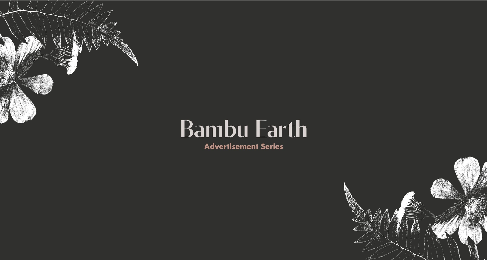
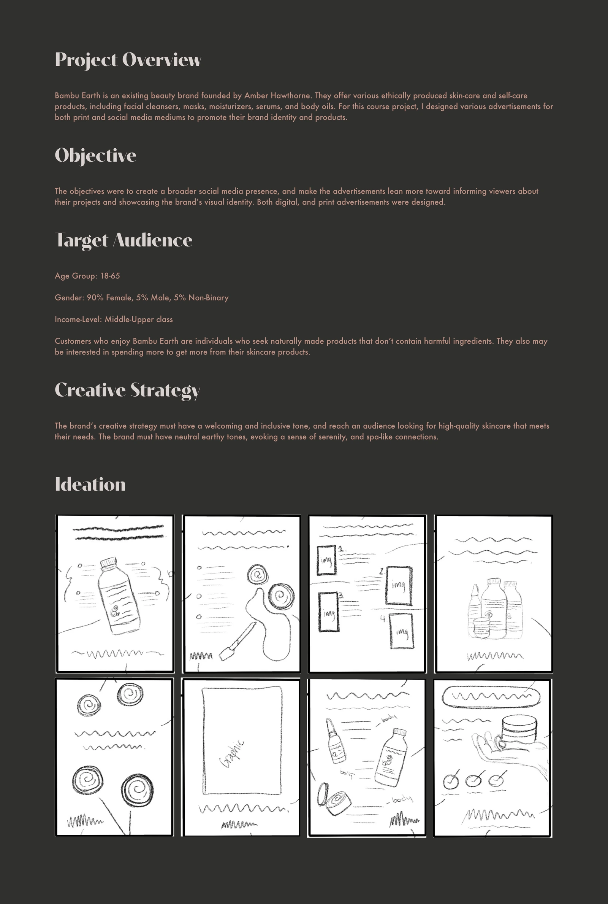
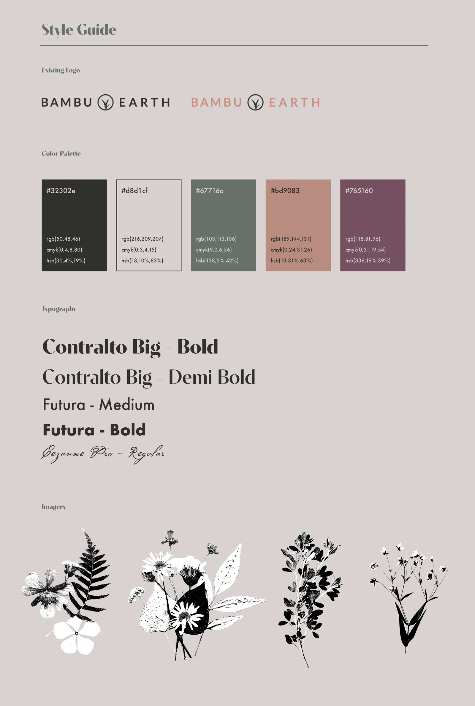
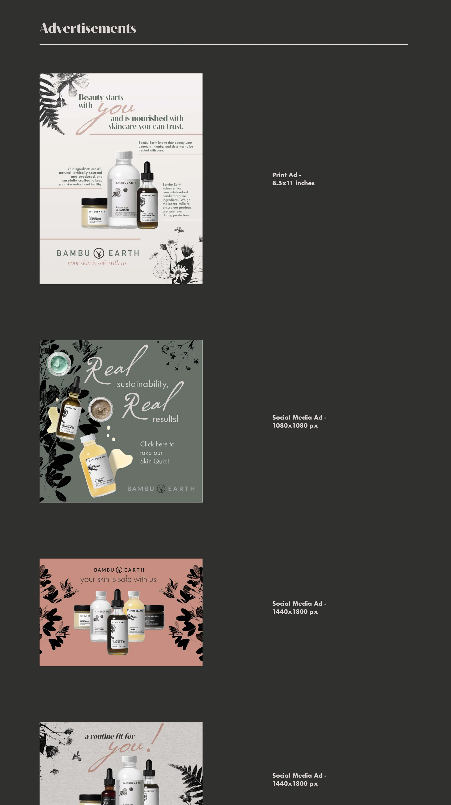
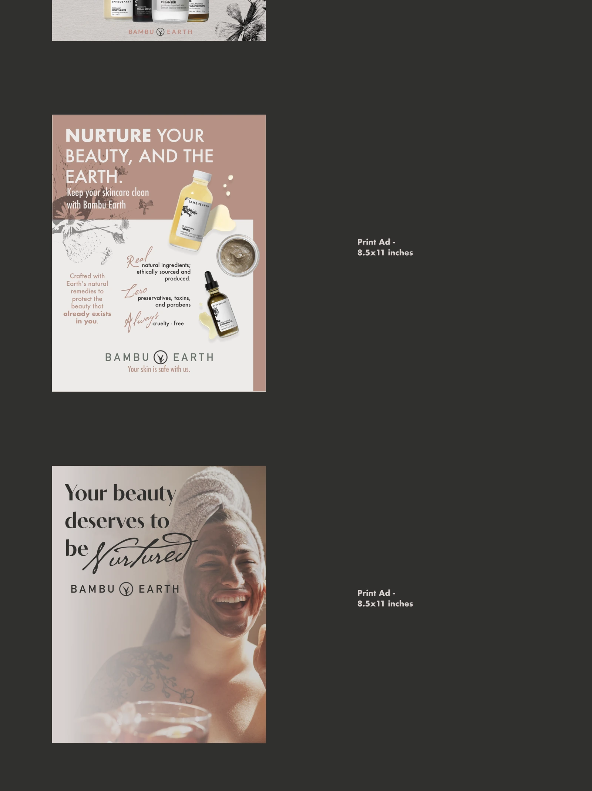
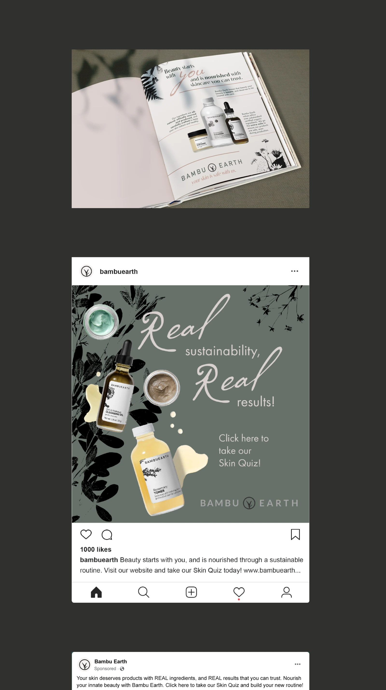
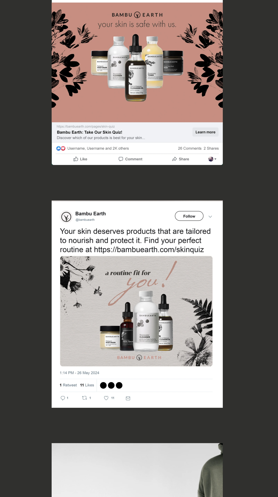
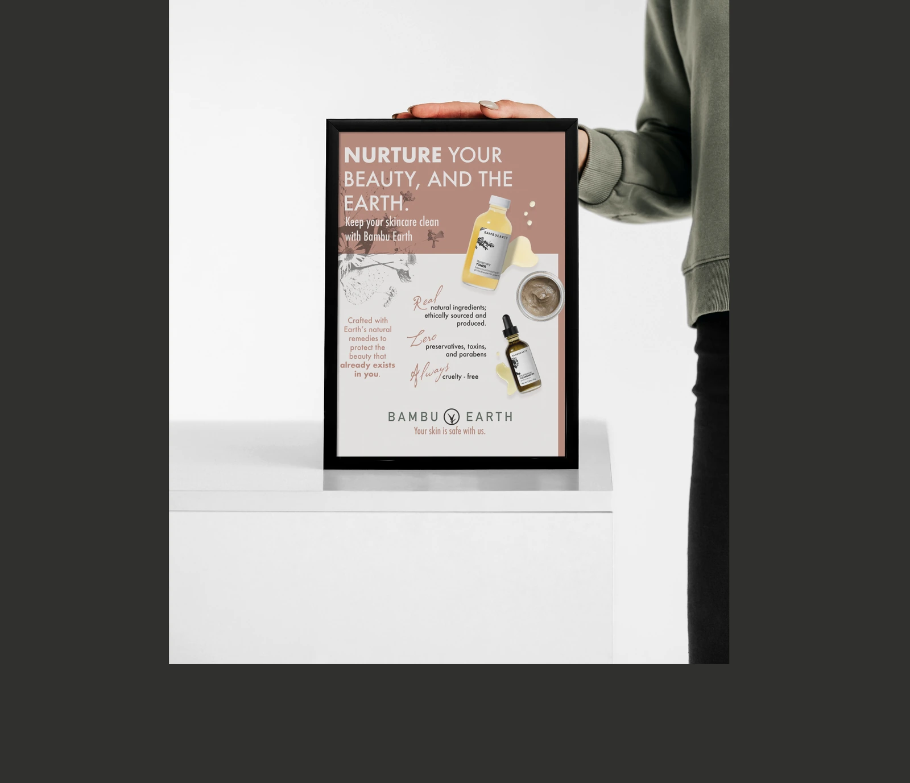

Read project overview
A course project designing print and social media advertisements for Bambu Earth, a beauty brand offering ethically produced skin-care and self-care products. The work explores a welcoming, inclusive visual identity with natural, earthy tones and a focus on informing viewers about the products.







